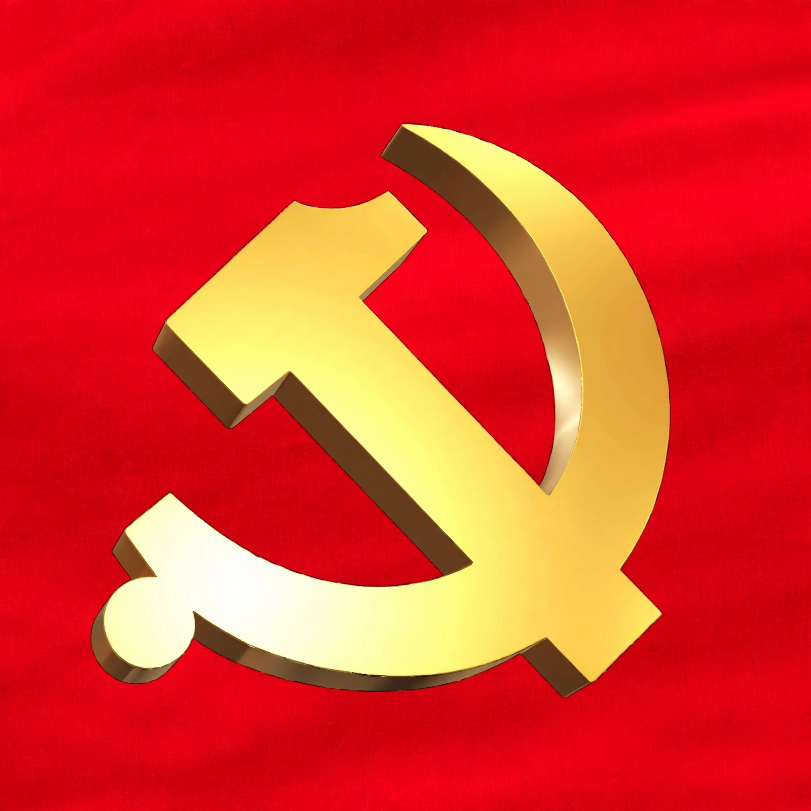

| Central Committee of the Chinese Communist Party | |
|---|---|
 | |
| Chinese | 中国共产党中央委员会 |
| Abbreviation | CCP Central Committee (中共中央) |
| Type | Party organ (executive between National Congresses) |
| Term | Five years, elected by the National Congress |
| Leadership | General Secretary; Politburo and its Standing Committee elected by the Central Committee |
| Seats | About 200 full members, plus alternate members |
| Meeting place | Beijing (plenary sessions usually at the Jingxi Hotel) |
The Central Committee of the Chinese Communist Party (Chinese: 中国共产党中央委员会) is the highest organ of the Chinese Communist Party (CCP) between sessions of the National Congress, the party's nominally supreme body. Elected every five years by the National Congress, it consists of roughly 200 full members and about 170 alternate members drawn from senior party, state, military, and provincial leaders. In practice, candidate lists are determined by the party's top leadership, and the committee's large size means real authority rests with its smaller elected bodies.
According to the CCP constitution, the Central Committee carries out the resolutions of the National Congress, directs the party's work, and represents the party externally when the Congress is not in session. At its first plenary session after each Congress, the Central Committee elects the party's General Secretary, the Politburo, the Politburo Standing Committee, and endorses the composition of the Central Military Commission. Subsequent plenary sessions (plenums) are typically held annually and issue major policy decisions: for example, the Third Plenum of the 11th Central Committee in December 1978 launched China's reform and opening-up under Deng Xiaoping.
The Central Committee operates through a general office and functional departments, including the Organization Department (personnel appointments), the Publicity (Propaganda) Department, the United Front Work Department, and the International Department. Its plenary sessions are numbered by committee and sequence — for instance, the "Fourth Plenum" of a given Central Committee. Alternate members may attend plenums without voting rights and fill vacancies among full members.
The Central Committee traces its origins to the central organs created at the party's early congresses in the 1920s. Its role shifted over the decades: during the Mao era, plenums ratified campaigns from the Great Leap Forward to the Cultural Revolution, which was launched at the Eleventh Plenum of the 8th Central Committee in 1966. Since 1978, regularized plenums and five-year terms have made the committee a more institutionalized, if still leadership-dominated, arena for announcing policy direction and personnel changes.
Full members typically include provincial party secretaries and governors, ministers, and senior People's Liberation Army officers. Membership is a prerequisite for elevation to the Politburo. Expulsion of members — for example during anti-corruption campaigns — must be ratified by a plenum.
This article is a recreation from memory in the style of Wikipedia.